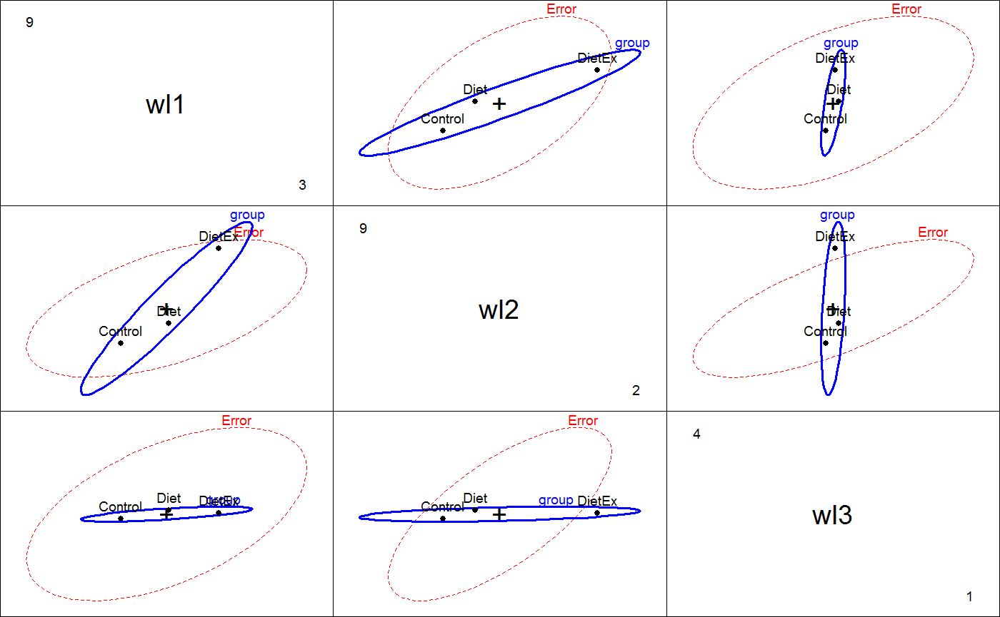
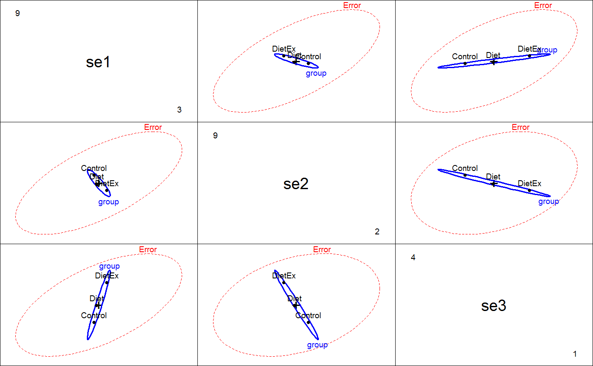
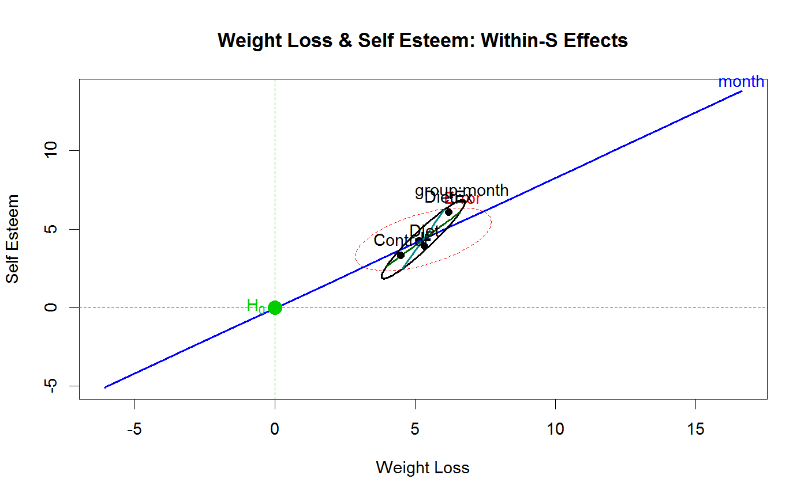

<!-- Generated by pkgdown: do not edit by hand -->
<!DOCTYPE html>
<html>
  <head>
  <meta charset="utf-8">
<meta http-equiv="X-UA-Compatible" content="IE=edge">
<meta name="viewport" content="width=device-width, initial-scale=1.0">

<title>Weight Loss Data — WeightLoss • heplots</title>

<!-- jquery -->
<script src="https://code.jquery.com/jquery-3.1.0.min.js" integrity="sha384-nrOSfDHtoPMzJHjVTdCopGqIqeYETSXhZDFyniQ8ZHcVy08QesyHcnOUpMpqnmWq" crossorigin="anonymous"></script>
<!-- Bootstrap -->
<link href="https://maxcdn.bootstrapcdn.com/bootswatch/3.3.7/cerulean/bootstrap.min.css" rel="stylesheet" crossorigin="anonymous">

<script src="https://maxcdn.bootstrapcdn.com/bootstrap/3.3.7/js/bootstrap.min.js" integrity="sha384-Tc5IQib027qvyjSMfHjOMaLkfuWVxZxUPnCJA7l2mCWNIpG9mGCD8wGNIcPD7Txa" crossorigin="anonymous"></script>

<!-- Font Awesome icons -->
<link href="https://maxcdn.bootstrapcdn.com/font-awesome/4.6.3/css/font-awesome.min.css" rel="stylesheet" integrity="sha384-T8Gy5hrqNKT+hzMclPo118YTQO6cYprQmhrYwIiQ/3axmI1hQomh7Ud2hPOy8SP1" crossorigin="anonymous">


<!-- pkgdown -->
<link href="../pkgdown.css" rel="stylesheet">
<script src="../jquery.sticky-kit.min.js"></script>
<script src="../pkgdown.js"></script>
  
  
<!-- mathjax -->
<script src='https://mathjax.rstudio.com/latest/MathJax.js?config=TeX-AMS-MML_HTMLorMML'></script>

<!--[if lt IE 9]>
<script src="https://oss.maxcdn.com/html5shiv/3.7.3/html5shiv.min.js"></script>
<script src="https://oss.maxcdn.com/respond/1.4.2/respond.min.js"></script>
<![endif]-->


  </head>

  <body>
    <div class="container template-reference-topic">
      <header>
      <div class="navbar navbar-default navbar-fixed-top" role="navigation">
  <div class="container">
    <div class="navbar-header">
      <button type="button" class="navbar-toggle collapsed" data-toggle="collapse" data-target="#navbar">
        <span class="icon-bar"></span>
        <span class="icon-bar"></span>
        <span class="icon-bar"></span>
      </button>
      <a class="navbar-brand" href="../index.html">heplots</a>
    </div>
    <div id="navbar" class="navbar-collapse collapse">
      <ul class="nav navbar-nav">
        <li>
  <a href="../index.html">
    <span class="fa fa-home fa-lg"></span>
     
  </a>
</li>
<li>
  <a href="../reference/index.html">Reference</a>
</li>
      </ul>
      
      <ul class="nav navbar-nav navbar-right">
        
      </ul>
    </div><!--/.nav-collapse -->
  </div><!--/.container -->
</div><!--/.navbar -->

      
      </header>

      <div class="row">
  <div class="col-md-9 contents">
    <div class="page-header">
    <h1>Weight Loss Data</h1>
    </div>

    
    <p>Contrived data on weight loss and self esteem over three months,
for three groups of individuals: Control, Diet and Diet + Exercise.
The data constitute a double-multivariate design.</p>
    

    <pre class="usage"><span class='fu'>data</span>(<span class='no'>WeightLoss</span>)</pre>
        
    <h2 class="hasAnchor" id="format"><a class="anchor" href="#format"></a>Format</h2>

    <p>A data frame with 34 observations on the following 7 variables.</p><dl class='dl-horizontal'>
    <dt><code>group</code></dt><dd><p>a factor with levels <code>Control</code> <code>Diet</code> <code>DietEx</code>.</p></dd>
    <dt><code>wl1</code></dt><dd><p>Weight loss at 1 month</p></dd>
    <dt><code>wl2</code></dt><dd><p>Weight loss at 2 months</p></dd>
    <dt><code>wl3</code></dt><dd><p>Weight loss at 3 months</p></dd>
    <dt><code>se1</code></dt><dd><p>Self esteem at 1 month</p></dd>
    <dt><code>se2</code></dt><dd><p>Self esteem at 2 months</p></dd>
    <dt><code>se3</code></dt><dd><p>Self esteem at 3 months</p></dd>
  </dl>
    
    <h2 class="hasAnchor" id="details"><a class="anchor" href="#details"></a>Details</h2>

    <p>Helmert contrasts are assigned to <code>group</code>, comparing <code>Control</code> vs. (<code>Diet</code> <code>DietEx</code>)
and <code>Diet</code> vs. <code>DietEx</code>.</p>
    
    <h2 class="hasAnchor" id="source"><a class="anchor" href="#source"></a>Source</h2>

    <p>Originally taken from <a href='http://www.csun.edu/~ata20315/psy524/main.htm'>http://www.csun.edu/~ata20315/psy524/main.htm</a>,
but modified slightly</p>
    
    <h2 class="hasAnchor" id="references"><a class="anchor" href="#references"></a>References</h2>

    <p>Friendly, Michael  (2010). HE Plots for Repeated Measures Designs. <em>Journal of Statistical Software</em>,
  37(4), 1-40. URL <a href='http://www.jstatsoft.org/v37/i04/'>http://www.jstatsoft.org/v37/i04/</a>.</p>
    

    <h2 class="hasAnchor" id="examples"><a class="anchor" href="#examples"></a>Examples</h2>
    <pre class="examples"><div class='input'><span class='fu'>data</span>(<span class='no'>WeightLoss</span>)
<span class='fu'>str</span>(<span class='no'>WeightLoss</span>)</div><div class='output co'>#&gt; 'data.frame':	34 obs. of  7 variables:
#&gt;  $ group: Factor w/ 3 levels "Control","Diet",..: 1 1 1 1 1 1 1 1 1 1 ...
#&gt;   ..- attr(*, "contrasts")= num [1:3, 1:2] -2 1 1 0 -1 1
#&gt;   .. ..- attr(*, "dimnames")=List of 2
#&gt;   .. .. ..$ : chr  "Control" "Diet" "DietEx"
#&gt;   .. .. ..$ : NULL
#&gt;  $ wl1  : int  4 4 4 3 5 6 6 5 5 3 ...
#&gt;  $ wl2  : int  3 4 3 2 3 5 5 4 4 3 ...
#&gt;  $ wl3  : int  3 3 1 1 2 4 4 1 1 2 ...
#&gt;  $ se1  : int  14 13 17 11 16 17 17 13 14 14 ...
#&gt;  $ se2  : int  13 14 12 11 15 18 16 15 14 15 ...
#&gt;  $ se3  : int  15 17 16 12 14 18 19 15 15 13 ...</div><div class='input'><span class='fu'>table</span>(<span class='no'>WeightLoss</span>$<span class='no'>group</span>)</div><div class='output co'>#&gt; 
#&gt; Control    Diet  DietEx 
#&gt;      12      12      10 </div><div class='input'>
<span class='fu'>contrasts</span>(<span class='no'>WeightLoss</span>$<span class='no'>group</span>) <span class='kw'>&lt;-</span> <span class='fu'>matrix</span>(<span class='fu'>c</span>(-<span class='fl'>2</span>,<span class='fl'>1</span>,<span class='fl'>1</span>, <span class='fl'>0</span>, -<span class='fl'>1</span>, <span class='fl'>1</span>),<span class='kw'>ncol</span><span class='kw'>=</span><span class='fl'>2</span>)
(<span class='no'>wl.mod</span><span class='kw'>&lt;-</span><span class='fu'>lm</span>(<span class='fu'>cbind</span>(<span class='no'>wl1</span>,<span class='no'>wl2</span>,<span class='no'>wl3</span>,<span class='no'>se1</span>,<span class='no'>se2</span>,<span class='no'>se3</span>)~<span class='no'>group</span>, <span class='kw'>data</span><span class='kw'>=</span><span class='no'>WeightLoss</span>))</div><div class='output co'>#&gt; 
#&gt; Call:
#&gt; lm(formula = cbind(wl1, wl2, wl3, se1, se2, se3) ~ group, data = WeightLoss)
#&gt; 
#&gt; Coefficients:
#&gt;              wl1       wl2       wl3       se1       se2       se3     
#&gt; (Intercept)   5.34444   4.45000   2.17778  14.92778  13.79444  16.28333
#&gt; group1        0.42222   0.55833   0.04722   0.08889  -0.26944   0.60000
#&gt; group2        0.43333   1.09167  -0.02500   0.18333  -0.22500   0.71667
#&gt; </div><div class='input'>
<span class='fu'><a href='heplot.html'>heplot</a></span>(<span class='no'>wl.mod</span>, <span class='kw'>hypotheses</span><span class='kw'>=</span><span class='fu'>c</span>(<span class='st'>"group1"</span>, <span class='st'>"group2"</span>))</div><div class='img'></div><div class='input'><span class='fu'>pairs</span>(<span class='no'>wl.mod</span>, <span class='kw'>variables</span><span class='kw'>=</span><span class='fl'>1</span>:<span class='fl'>3</span>)</div><div class='img'></div><div class='input'><span class='fu'>pairs</span>(<span class='no'>wl.mod</span>, <span class='kw'>variables</span><span class='kw'>=</span><span class='fl'>4</span>:<span class='fl'>6</span>)</div><div class='img'></div><div class='input'>
<span class='co'># within-S variables</span>
<span class='no'>within</span> <span class='kw'>&lt;-</span> <span class='fu'>data.frame</span>(<span class='kw'>measure</span><span class='kw'>=</span><span class='fu'>rep</span>(<span class='fu'>c</span>(<span class='st'>"Weight loss"</span>, <span class='st'>"Self esteem"</span>),<span class='kw'>each</span><span class='kw'>=</span><span class='fl'>3</span>), <span class='kw'>month</span><span class='kw'>=</span><span class='fu'>rep</span>(<span class='fu'>ordered</span>(<span class='fl'>1</span>:<span class='fl'>3</span>),<span class='fl'>2</span>))

<span class='co'># doubly-multivariate analysis: requires car 2.0+</span></div><span class='co'># NOT RUN {</span>
<span class='kw'>if</span> (<span class='fu'>packageDescription</span>(<span class='st'>"car"</span>)<span class='kw'>[[</span><span class='st'>"Version"</span>]] <span class='kw'>&gt;=</span> <span class='fl'>2</span>) {
<span class='no'>imatrix</span> <span class='kw'>&lt;-</span> <span class='fu'>matrix</span>(<span class='fu'>c</span>(
        <span class='fl'>1</span>,<span class='fl'>0</span>,-<span class='fl'>1</span>, <span class='fl'>1</span>, <span class='fl'>0</span>, <span class='fl'>0</span>,
        <span class='fl'>1</span>,<span class='fl'>0</span>, <span class='fl'>0</span>,-<span class='fl'>2</span>, <span class='fl'>0</span>, <span class='fl'>0</span>,
        <span class='fl'>1</span>,<span class='fl'>0</span>, <span class='fl'>1</span>, <span class='fl'>1</span>, <span class='fl'>0</span>, <span class='fl'>0</span>,
        <span class='fl'>0</span>,<span class='fl'>1</span>, <span class='fl'>0</span>, <span class='fl'>0</span>,-<span class='fl'>1</span>, <span class='fl'>1</span>,
        <span class='fl'>0</span>,<span class='fl'>1</span>, <span class='fl'>0</span>, <span class='fl'>0</span>, <span class='fl'>0</span>,-<span class='fl'>2</span>,
        <span class='fl'>0</span>,<span class='fl'>1</span>, <span class='fl'>0</span>, <span class='fl'>0</span>, <span class='fl'>1</span>, <span class='fl'>1</span>), <span class='fl'>6</span>, <span class='fl'>6</span>, <span class='kw'>byrow</span><span class='kw'>=</span><span class='fl'>TRUE</span>)
<span class='co'># NB: for heplots the columns of imatrix should have names</span>
<span class='fu'>colnames</span>(<span class='no'>imatrix</span>) <span class='kw'>&lt;-</span> <span class='fu'>c</span>(<span class='st'>"WL"</span>, <span class='st'>"SE"</span>, <span class='st'>"WL.L"</span>, <span class='st'>"WL.Q"</span>, <span class='st'>"SE.L"</span>, <span class='st'>"SE.Q"</span>)
<span class='fu'>rownames</span>(<span class='no'>imatrix</span>) <span class='kw'>&lt;-</span> <span class='fu'>colnames</span>(<span class='no'>WeightLoss</span>)[-<span class='fl'>1</span>]
(<span class='no'>imatrix</span> <span class='kw'>&lt;-</span> <span class='fu'>list</span>(<span class='kw'>measure</span><span class='kw'>=</span><span class='no'>imatrix</span>[,<span class='fl'>1</span>:<span class='fl'>2</span>], <span class='kw'>month</span><span class='kw'>=</span><span class='no'>imatrix</span>[,<span class='fl'>3</span>:<span class='fl'>6</span>]))
<span class='fu'>contrasts</span>(<span class='no'>WeightLoss</span>$<span class='no'>group</span>) <span class='kw'>&lt;-</span> <span class='fu'>matrix</span>(<span class='fu'>c</span>(-<span class='fl'>2</span>,<span class='fl'>1</span>,<span class='fl'>1</span>, <span class='fl'>0</span>,-<span class='fl'>1</span>,<span class='fl'>1</span>), <span class='kw'>ncol</span><span class='kw'>=</span><span class='fl'>2</span>)
(<span class='no'>wl.mod</span><span class='kw'>&lt;-</span><span class='fu'>lm</span>(<span class='fu'>cbind</span>(<span class='no'>wl1</span>, <span class='no'>wl2</span>, <span class='no'>wl3</span>, <span class='no'>se1</span>, <span class='no'>se2</span>, <span class='no'>se3</span>)~<span class='no'>group</span>, <span class='kw'>data</span><span class='kw'>=</span><span class='no'>WeightLoss</span>))
(<span class='no'>wl.aov</span> <span class='kw'>&lt;-</span> <span class='fu'>Anova</span>(<span class='no'>wl.mod</span>, <span class='kw'>imatrix</span><span class='kw'>=</span><span class='no'>imatrix</span>, <span class='kw'>test</span><span class='kw'>=</span><span class='st'>"Roy"</span>))

<span class='fu'><a href='heplot.html'>heplot</a></span>(<span class='no'>wl.mod</span>, <span class='kw'>imatrix</span><span class='kw'>=</span><span class='no'>imatrix</span>, <span class='kw'>iterm</span><span class='kw'>=</span><span class='st'>"group:measure"</span>)
}
<span class='co'># }</span><div class='input'>
<span class='co'># do the correct analysis 'manually'</span>
<span class='no'>unit</span> <span class='kw'>&lt;-</span> <span class='kw'>function</span>(<span class='no'>n</span>, <span class='no'>prefix</span><span class='kw'>=</span><span class='st'>""</span>) {
        <span class='no'>J</span> <span class='kw'>&lt;-</span><span class='fu'>matrix</span>(<span class='fu'>rep</span>(<span class='fl'>1</span>, <span class='no'>n</span>), <span class='kw'>ncol</span><span class='kw'>=</span><span class='fl'>1</span>)
        <span class='fu'>rownames</span>(<span class='no'>J</span>) <span class='kw'>&lt;-</span> <span class='fu'>paste</span>(<span class='no'>prefix</span>, <span class='fl'>1</span>:<span class='no'>n</span>, <span class='kw'>sep</span><span class='kw'>=</span><span class='st'>""</span>)
        <span class='no'>J</span>
}

<span class='no'>measure</span> <span class='kw'>&lt;-</span> <span class='fu'>kronecker</span>(<span class='fu'>diag</span>(<span class='fl'>2</span>), <span class='fu'>unit</span>(<span class='fl'>3</span>, <span class='st'>'M'</span>)/<span class='fl'>3</span>, <span class='kw'>make.dimnames</span><span class='kw'>=</span><span class='fl'>TRUE</span>)
<span class='fu'>colnames</span>(<span class='no'>measure</span>)<span class='kw'>&lt;-</span> <span class='fu'>c</span>(<span class='st'>'WL'</span>, <span class='st'>'SE'</span>)

<span class='no'>between</span> <span class='kw'>&lt;-</span> <span class='fu'>as.matrix</span>(<span class='no'>WeightLoss</span>[,-<span class='fl'>1</span>])</div># NOT RUN {
<!-- %*% measure -->
# }
<div class='input'>
<span class='no'>between.mod</span> <span class='kw'>&lt;-</span> <span class='fu'>lm</span>(<span class='no'>between</span> ~ <span class='no'>group</span>, <span class='kw'>data</span><span class='kw'>=</span><span class='no'>WeightLoss</span>)
<span class='fu'>Anova</span>(<span class='no'>between.mod</span>)</div><div class='output co'>#&gt; 
#&gt; Type II MANOVA Tests: Pillai test statistic
#&gt;       Df test stat approx F num Df den Df   Pr(&gt;F)   
#&gt; group  2   0.72552   2.5617     12     54 0.009243 **
#&gt; ---
#&gt; Signif. codes:  0 <U+0091>***<U+0092> 0.001 <U+0091>**<U+0092> 0.01 <U+0091>*<U+0092> 0.05 <U+0091>.<U+0092> 0.1 <U+0091> <U+0092> 1</div><div class='input'>
<span class='fu'><a href='heplot.html'>heplot</a></span>(<span class='no'>between.mod</span>, <span class='kw'>hypotheses</span><span class='kw'>=</span><span class='fu'>c</span>(<span class='st'>"group1"</span>, <span class='st'>"group2"</span>),
        <span class='kw'>xlab</span><span class='kw'>=</span><span class='st'>"Weight Loss"</span>, <span class='kw'>ylab</span><span class='kw'>=</span><span class='st'>"Self Esteem"</span>,
        <span class='kw'>col</span><span class='kw'>=</span><span class='fu'>c</span>(<span class='st'>"red"</span>, <span class='st'>"blue"</span>, <span class='st'>"brown"</span>),
        <span class='kw'>main</span><span class='kw'>=</span><span class='st'>"Weight Loss &amp; Self Esteem: Group Effect"</span>)</div><div class='img'></div><div class='input'>
<span class='no'>month</span> <span class='kw'>&lt;-</span> <span class='fu'>kronecker</span>(<span class='fu'>diag</span>(<span class='fl'>2</span>), <span class='fu'>poly</span>(<span class='fl'>1</span>:<span class='fl'>3</span>), <span class='kw'>make.dimnames</span><span class='kw'>=</span><span class='fl'>TRUE</span>)
<span class='fu'>colnames</span>(<span class='no'>month</span>)<span class='kw'>&lt;-</span> <span class='fu'>c</span>(<span class='st'>'WL'</span>, <span class='st'>'SE'</span>)
<span class='no'>trends</span> <span class='kw'>&lt;-</span> <span class='fu'>as.matrix</span>(<span class='no'>WeightLoss</span>[,-<span class='fl'>1</span>])</div># NOT RUN {
<!-- %*% month -->
# }
<div class='input'><span class='no'>within.mod</span> <span class='kw'>&lt;-</span> <span class='fu'>lm</span>(<span class='no'>trends</span> ~ <span class='no'>group</span>, <span class='kw'>data</span><span class='kw'>=</span><span class='no'>WeightLoss</span>)
<span class='fu'>Anova</span>(<span class='no'>within.mod</span>)</div><div class='output co'>#&gt; 
#&gt; Type II MANOVA Tests: Pillai test statistic
#&gt;       Df test stat approx F num Df den Df   Pr(&gt;F)   
#&gt; group  2   0.72552   2.5617     12     54 0.009243 **
#&gt; ---
#&gt; Signif. codes:  0 <U+0091>***<U+0092> 0.001 <U+0091>**<U+0092> 0.01 <U+0091>*<U+0092> 0.05 <U+0091>.<U+0092> 0.1 <U+0091> <U+0092> 1</div><div class='input'>
<span class='fu'><a href='heplot.html'>heplot</a></span>(<span class='no'>within.mod</span>)</div><div class='img'></div><div class='input'><span class='fu'><a href='heplot.html'>heplot</a></span>(<span class='no'>within.mod</span>, <span class='kw'>hypotheses</span><span class='kw'>=</span><span class='fu'>c</span>(<span class='st'>"group1"</span>, <span class='st'>"group2"</span>),
        <span class='kw'>xlab</span><span class='kw'>=</span><span class='st'>"Weight Loss"</span>, <span class='kw'>ylab</span><span class='kw'>=</span><span class='st'>"Self Esteem"</span>,
        <span class='kw'>type</span><span class='kw'>=</span><span class='st'>"III"</span>, <span class='kw'>remove.intercept</span><span class='kw'>=</span><span class='fl'>FALSE</span>,
        <span class='kw'>term.labels</span><span class='kw'>=</span><span class='fu'>c</span>(<span class='st'>"month"</span>, <span class='st'>"group:month"</span>),
        <span class='kw'>main</span><span class='kw'>=</span><span class='st'>"Weight Loss &amp; Self Esteem: Within-S Effects"</span>)</div><div class='input'><span class='fu'><a href='mark.H0.html'>mark.H0</a></span>()</div><div class='img'></div></pre>
  </div>
  <div class="col-md-3 hidden-xs hidden-sm" id="sidebar">
    <h2>Contents</h2>
    <ul class="nav nav-pills nav-stacked">
      
      <li><a href="#format">Format</a></li>

      <li><a href="#details">Details</a></li>

      <li><a href="#source">Source</a></li>

      <li><a href="#references">References</a></li>
      
      <li><a href="#examples">Examples</a></li>
    </ul>

  </div>
</div>

      <footer>
      <div class="copyright">
  <p>Developed by John Fox, Michael Friendly.</p>
</div>

<div class="pkgdown">
  <p>Site built with <a href="http://hadley.github.io/pkgdown/">pkgdown</a>.</p>
</div>

      </footer>
   </div>

  </body>
</html>
